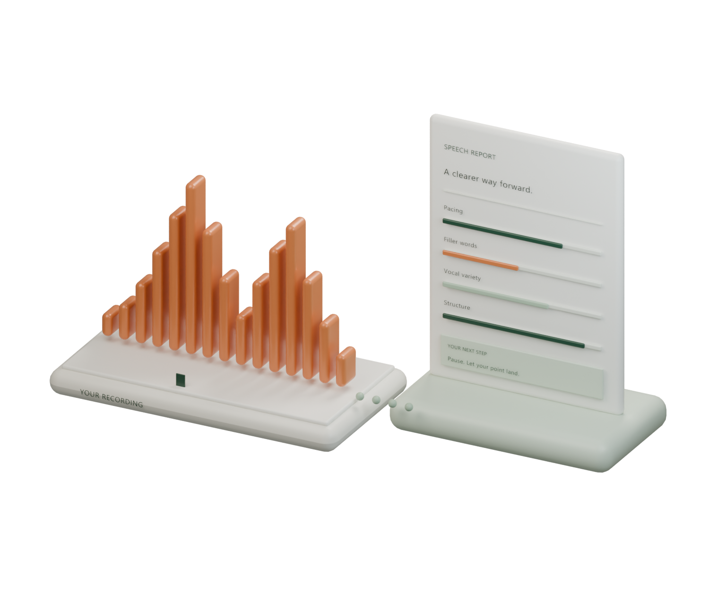

01 /
Make yourself heard.
Record in your browser or upload a speech you’ve already recorded. Up to 20 minutes.
MP3, WAV, M4A · Up to 100 MBAI speech coaching. Clear next steps.
Upload a recording or speak into the app. Get clear AI feedback on how you sound—and what to try next.
7 days free · Cancel anytime · Card required

FROM “HOW DID I DO?” TO “I KNOW WHAT’S NEXT.”
You have the ideas. Build the delivery to match.
Bring a presentation, an interview answer, or a talk you want to get right.
Record in your browser or upload a speech you’ve already recorded. Up to 20 minutes.
MP3, WAV, M4A · Up to 100 MBAI examines your pace, filler words, vocal variety, and structure. You get the specifics, with timestamps.
Four dimensions. One complete picture.Leave with three focused actions and suggested rewrites. Practise, record again, and put the feedback to work.
Something to do. Not just a score.MEET YOUR NEXT “AHA” MOMENT
A useful report doesn’t stop at a number.
It shows you the moment, explains the pattern,
and gives you a way to improve.
YOUR PACE
You speed up as you reach your main point. Try a short pause before “here’s what matters” to give your audience a moment to catch up.
KEEP THE IDEA. MAKE IT LAND.
Sometimes the words are already there.
You just need to let them stand on their own.
WHAT YOU SAID ILLUSTRATIVE EXAMPLE
“I guess what I’m sort of trying to say is that we need to listen to our customers.”
TRY THIS INSTEAD
“We need to listen
to our customers.”
Same idea. More conviction.
GOOD SPEAKING IS A PRACTICE
For the presentation on Monday.
The interview next month.
And everything you haven’t said yet.
€12.99 / month
Billed monthly after your 7-day free trial.
Start my 7-day free trialCard required. No charge until your trial ends.
Cancel before then to pay nothing.
A FEW THINGS TO KNOW
A prepared speech, a presentation, or an impromptu answer. Record in your browser or upload an MP3, WAV, or M4A file, up to 20 minutes or 100 MB.
Your audio is held while your report is generated, then deleted. Your report stays in your account so you can revisit it. You can delete the report whenever you like.
You get 7 days to try the full product. A card is required when you sign up. Your selected subscription starts after the trial; cancel before it ends and you won’t be charged.
Most recordings under 15 minutes produce a report in about 3 minutes. Longer recordings may take more time.
English is the best-supported language today. SpeakGrade can analyse most major European languages, but the coaching rubric is currently tuned for English.
YOUR NEXT SPEECH IS A FRESH START.